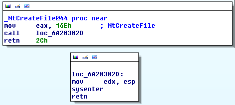
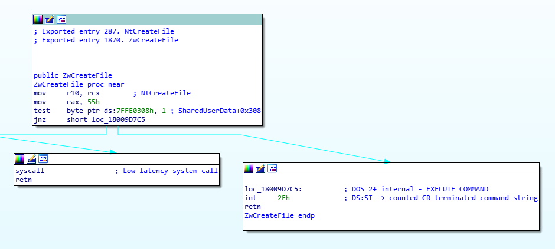
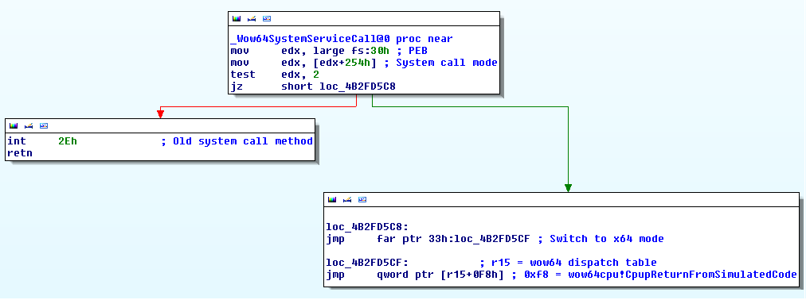

# Syscalls on Windows 10
Syscalls work a little differently on Windows 10.
• https://www.fireeye.com/blog/threat-research/2020/11/wow64-subsystem-internals-and-hooking-techniques.html
• https://www.malwaretech.com/2015/07/windows-10-system-call-stub-changes.html
## Windows 10 x86
This is
NtCreateFile on Windows 10 x86.(credit to MalwareTech for the image)
It moves the syscall value for NtCreateFile -
16Eh - into eax,and jumps to a stub just below the NtCreateFile function call
which executes
sysenter to switch to kernel mode.
{kind=link}
## Windows 10 x64
This is
NtCreateFile on Windows 10 x64 2004 19041.928It moves the syscall value for NtCreateFile -
55h - into EAX and then executes
syscall.
## Windows 10 x64 (WoW64)
This is the
32bit NtCreateFile function from a 32bit Ntdll.dll on a 64bit copy of Windows 10,version
Windows 10 x64 2004 19041.928.(credit to MalwareTech for images)
It moves the syscall value for NtCreateFile -
55h - into eaxand calls a pointer to a function -
Wow64SystemServiceCall
Wow64SystemServiceCall checks how it should execute the syscall.test ANDs against a flag in the PEB - offset 254h - with 2If the result is 0 (i.e. the flag isn't set to
2) then it will perform the old syscall method.If the flag is set to
2, it will jump and perform the new syscall method with a jump to far ptr.
{kind=link}